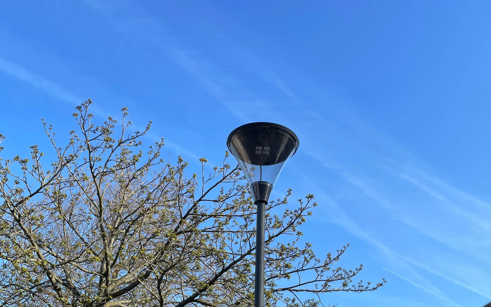
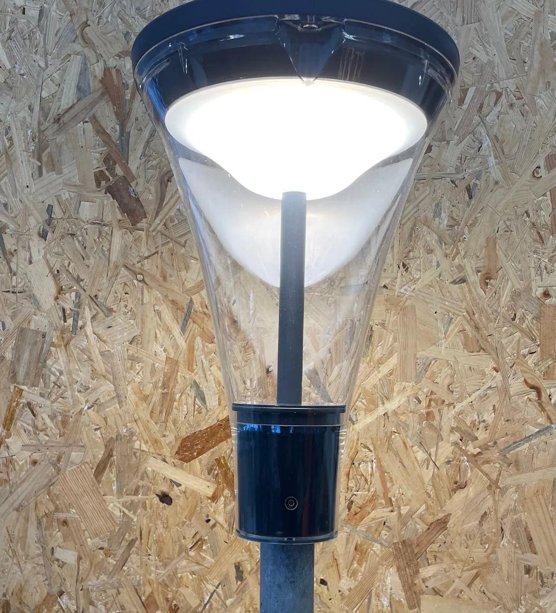
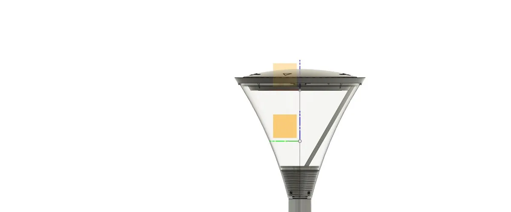
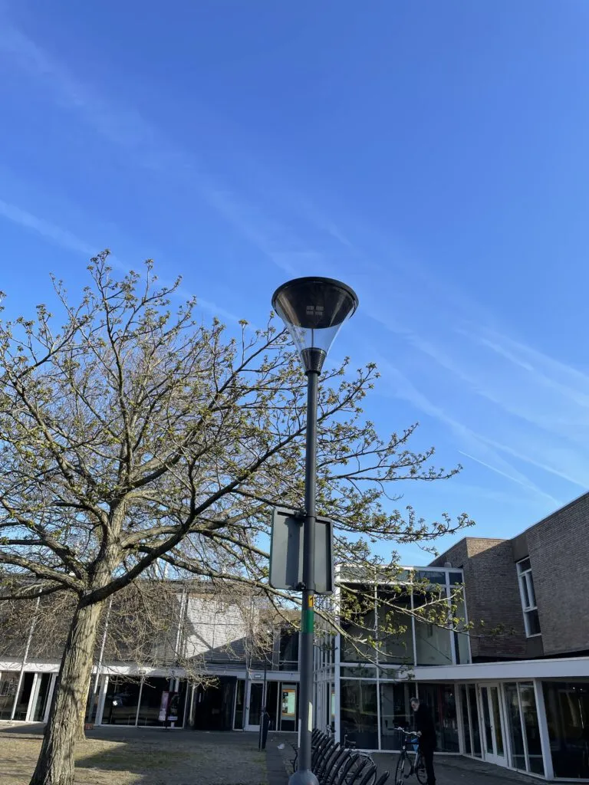
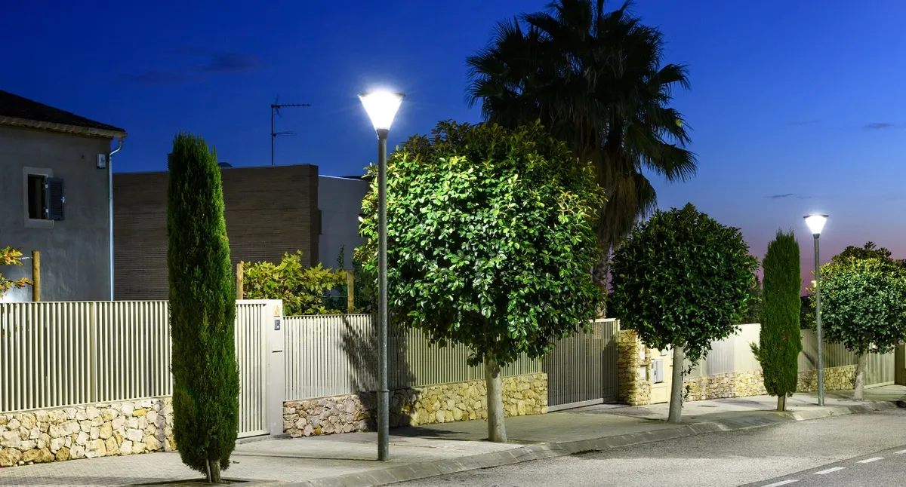

Dat hangt af van de plattegrond en de masthoogte. Grofweg: T2 voor smalle paden, T3 voor straten, T4 voor bredere wegen en pleinen. Stuur een situatieschets, dan adviseren we.
Armatuur · Citylight
Citylight paaltoparmatuur

De Citylight is een paaltoparmatuur voor straat, plein en speelplaats: een stille vorm die overdag niet opvalt en 's avonds gelijkmatig licht geeft op de plek waar mensen lopen.
De behuizing is van duurzaam, slagvast polycarbonaat, de LED-module is efficiënt en de optiek kies je per situatie. Zo komt het licht op de weg of het plein terecht, en niet in de slaapkamer ernaast.
Herkenbaar?
Waar de Citylight op zijn plek is
Woonstraat en plein
Een straat vraagt een langwerpige lichtverdeling, een plein een ronde. Met de optieken T2, T3 en T4 past de verdeling bij de plattegrond, zodat je minder masten nodig hebt voor hetzelfde lichtniveau.
Speelplaats en park
Plekken waar kinderen spelen en waar een armatuur een bal of een stok te verduren krijgt. Polycarbonaat breekt niet zoals glas.
Nachtelijke rust
Met een Dynadimmer of DALI dimt het armatuur 's nachts terug: minder verbruik en minder licht op de gevels als er toch niemand loopt.
Opties en uitvoeringen
Wat je kunt kiezen
Slagvast polycarbonaat
Duurzaam en slagvast; het armatuur blijft heel waar glas breekt.
T2, T3 of T4
Een reeks aanpasbare optieken voor een optimale, uniforme lichtspreiding op maat van de plek.
2200K, 3000K of 4000K
Standaard in drie kleurtemperaturen. Afwijkende kleuren op aanvraag.
Aan/Uit, DALI, 1-10V of Dynadimmer
DALI of DALI SR, 1-10V, of een Dynadimmer met het standaard 3A-dimregime of een klantspecifiek regime.
Citylight en Citylight mini
Hetzelfde armatuur in twee maten, voor een plein of een pad.
5 jaar, Made in Holland
Ontworpen en geproduceerd in Nederland. Op onze armaturen geven we vijf jaar garantie.
Zo werken we
Van plattegrond tot mast
De Citylight is een standaardarmatuur, maar de keuze van optiek, lichtkleur en sturing bepaalt of het licht komt waar het moet. Daar helpen we bij.
-
01
Plattegrond en wens
Waar staan de masten, hoe hoog, en wat moet er verlicht worden? Met die gegevens kiezen we de optiek en het aantal armaturen.
Jij levert plattegrond of situatieschets, masthoogte
-
02
Keuze van optiek, kleur en sturing
T2, T3 of T4; 2200K, 3000K of 4000K; Aan/Uit, DALI, 1-10V of Dynadimmer. We leggen de keuze voor en lichten toe waarom.
Jij levert akkoord op de keuze
-
03
Productie en levering
De armaturen worden in Wormerveer gebouwd en ingeregeld op het gekozen dimregime.
Wat het oplevert
Wat de Citylight oplevert
Licht waar het hoort
De optiek legt het licht op straat of plein en houdt het van de gevels.
Breekt niet
Slagvast polycarbonaat in plaats van glas: minder schade, minder vervangen.
Dimt in de nacht
Dynadimmer of DALI regelt terug als er niemand loopt.
Vijf jaar garantie
Ontworpen en gemaakt in Nederland, met vijf jaar garantie.
In beeld
De Citylight van dichtbij

Werkplaats
Citylight mini
De kleine uitvoering, brandend in de werkplaats voordat hij de deur uitgaat.

Ontwerp
Citylight v2 in 3D
Het armatuur wordt in 3D ontworpen en doorontwikkeld; dit is de tweede generatie.

Overdag
Op een plein bij een school
Een stille vorm die overdag niet om aandacht vraagt.

Avond
In de woonstraat
Gelijkmatig licht op de rijbaan en het trottoir.
Citylight bij de Wijkertoren, Beverwijk
Citylight-paaltoparmaturen op het plein bij de Wijkertoren in Beverwijk, gefotografeerd in de schemering.

Citylight op een speelplaats en in de woonstraat
Citylight-armaturen rond een speelplaats en in een woonstraat: gelijkmatig licht op de plek waar mensen lopen en spelen.

FAQ
Veelgestelde vragen
De Citylight is een paaltoparmatuur en wordt op de mast geplaatst. Geef de mastdiameter door, dan kijken we of de bevestiging past of een adapter nodig is.
Standaard zijn 2200K, 3000K en 4000K. Afwijkende kleuren leveren we op aanvraag.
Contact
Een straat of plein dat beter licht verdient?
Stuur je maten, tekening of vraag. We denken mee over wat er past en maken een prijsopgave.